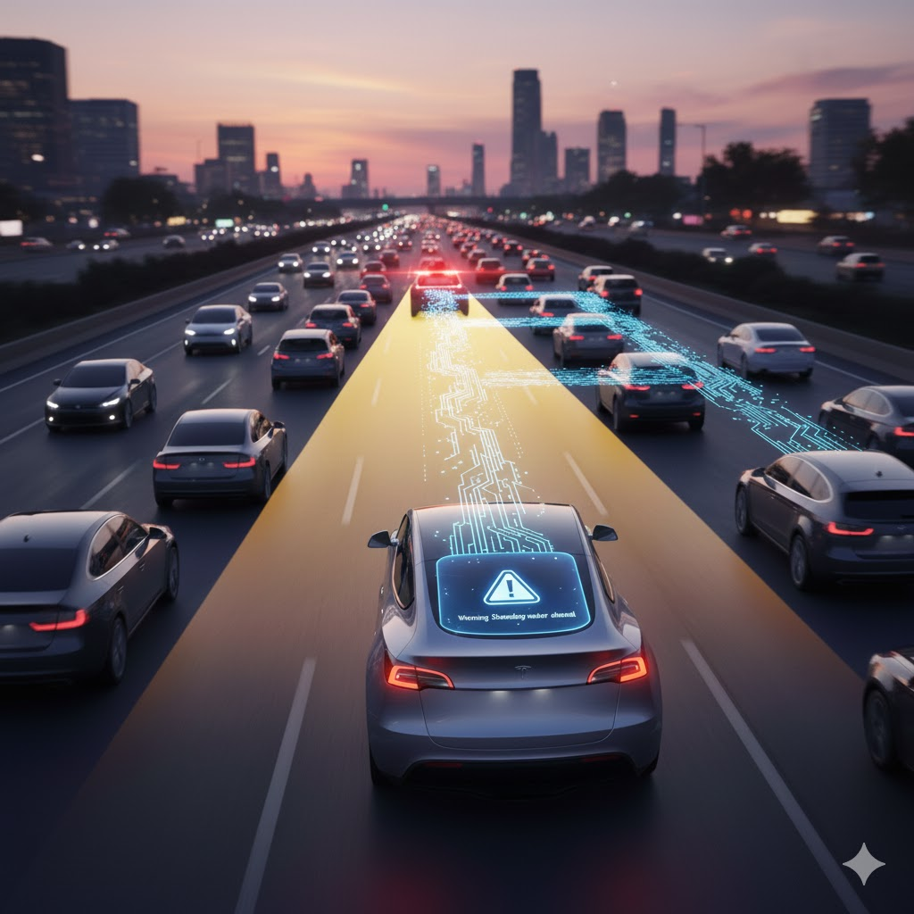

開車怕打盹？AI司機讓你輕鬆出行
文、圖 / 資訊處 李孟穎
您是否對於長途開車感到疲憊？是否在繁忙車流中，精神緊繃、壓力重重？ 或要在鬧區找個停車位，總感到負擔？「開車」這件事，可能耗費了我們大量時間與精力。然而這些日常困擾，現在正因為科技創新而迎來改變！
鴻海近期在NVIDIA GTC大會上宣布，將攜手NVIDIA、Stellantis與Uber，進軍Level 4等級自駕車市場。目標打造全球Robotaxi車隊，不讓Waymo與Tesla專美於前。
在AI、IOT、5G與感測器技術的進步驅動下，無需駕駛者監管、真正全面解放雙手的自動駕駛汽車正快速成為現實。它有望重新定義我們的出行方式，讓您擺脫壓力、享受自由。
☕ 「駕駛座」變身「行動休息室」
自駕車最直接的禮物，就是讓您彷彿有了專屬司機，把人類由重複、單調高壓的駕駛任務中解放出來。當汽車具備高階自動駕駛能力時，駕駛座將不再是需緊盯路況的勞動空間，而是能夠運用時間的個人休息室。
- 優化您的生活： 您的通勤時間可以用來回覆郵件、整理工作事項，閱讀一本好書、追劇。您也可以閉目養神，為接下來的一天積蓄精力。
- 終結停車煩惱： 當AI司機送您到目的地後，不需操心停車，它會自行尋找遠處的停車位停放，並在您需要時呼叫它來接，這也能讓城市停車空間可以重新設計優化。
(圖片由AI工具Gemini生成)
🛡️ 從「人為失誤」到「數據守護」
從數據上來看，超過九成的行車事故是疲勞駕駛、分心或酒駕等人為因素造成。當 AI
司機成為道路上主要駕駛者，道路安全將被帶入一個全新的維度。 根據Waymo 最新的營運數據(Waymo Safety
Impact Hub)顯示，其自駕車系統在每行駛百萬英里中，造成人員受傷的事故率比人類駕駛低了八成以上。
「永不疲勞」與「超人類感知」
AI 司機的反應速度比人類快上數倍，也不會因為昨夜失眠而疲勞遲鈍，始終維持穩定表現。未來其感知能力透過車聯網 (V2X) 技術，更能超越人類的感官極限，即使在視線之外，也能「聽見」前方車輛發出的緊急變道或剎車信號。 這種聯網能力也賦予 AI 司機類似人類收聽路況廣播般，當收到前方車輛回饋的積水、施工等路況警示時，能夠更從容地提前應對潛在的道路風險。
由AI自駕技術驅動的車流，能消除不必要的急煞和急加速，而像和諧車隊般平順巡航。這有助於從根本上緩解擁堵，將城市交通轉變為由「數據調度」驅動的高效網路。
💰 買車從「負資產」升級「印鈔機」
車輛自駕化開啟了「資產活化」的全新可能，您的車輛將不再只是停在車庫的折舊消耗品。 Tesla 計畫2026年推出Cybercab車款並在美國數個大城市上線無人計程車Robotaxi 服務，也承諾購買車輛的車主可在完全自動駕駛實現後，將車輛加入Robotaxi 網絡出租。
這樣一來若您選擇將閒置車輛加入共享車隊，您就可以搖身一變成為車行老闆，由 AI 司機出門為您自動賺取收益。 這種「車輛即服務」(VaaS) 的模式，將徹底顛覆了汽車資產的財務價值。

(圖片由AI工具Gemini生成)
🚀 智慧移動時代，我們都是參與者
當前汽車產業正在經歷電動化、自駕化、聯網化與共享化的過程，隨著 AI、IOT 等軟硬體技術逐漸成熟，自駕車的普及發展將是不可擋的趨勢。在各家競逐的自駕車技術足夠進步之時，我們買車後能夠不親自開車，而如同擁有一位專屬司機來服務。
若有天您在街上看到 Robotaxi 普及營運時，證明相關技術已跨越政府安全性的監管門檻，AI 司機已經可靠上路。屆時，您的愛車將不再是只折舊的消耗品，也能是閒置時會自動營運持續賺進收益的資產。
這場「智慧移動」革命，將重塑人類的出行體驗，大幅提升時間與空間的利用效益並帶來更便利的生活。您準備好讓 AI 司機接手方向盤了嗎？
